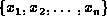
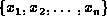
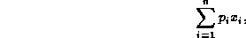
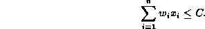
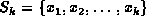
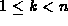
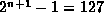

Data Structures and Algorithms
with Object-Oriented Design Patterns in Java
Data Structures and Algorithms
with Object-Oriented Design Patterns in Java
Consider again the 0/1 knapsack problem described in Section  .
We are given a set of n items
from which we are to select some number of items to be carried in a knapsack.
The solution to the problem has the form ,
where is one if the
.
We are given a set of n items
from which we are to select some number of items to be carried in a knapsack.
The solution to the problem has the form ,
where is one if the  item is placed in the knapsack
and zero otherwise.
Each item has both a weight, ,
and a profit,
item is placed in the knapsack
and zero otherwise.
Each item has both a weight, ,
and a profit,  .
The goal is to maximize the total profit,
.
The goal is to maximize the total profit,

subject to the knapsack capacity constraint

A partial solution to the problem is one in which only the first k items have been considered. That is, the solution has the form , where . The partial solution is feasible if and only if
Clearly if is infeasible, then every possible complete solution containing is also infeasible.
If is feasible, the total profit of any solution containing is bounded by
That is, the bound is equal the actual profit accrued from the k items already considered plus the sum of the profits of the remaining items.
Clearly, the 0/1 knapsack problem can be solved using a backtracking algorithm.
Furthermore, by using Equations and
a branch-and-bound solver can potentially prune the solution space,
thereby arriving at the solution more quickly.
For example, consider the 0/1 knapsack problem with n=6 items
given in Table .
There are possible solutions and
the solution space contains  nodes.
The simple DepthFirstSolver given in Program
visits all 127 nodes and generates all 64 solutions
because it does a complete traversal of the solution tree.
The BreadthFirstSolver of Program behaves similarly.
On the other hand, the DepthFirstBranchAndBoundSolver
shown in Program visits only 67 nodes
and generates only 27 complete solutions.
In this case,
the branch-and-bound technique prunes almost half the nodes
from the solution space!
 Copyright © 1998 by Bruno R. Preiss, P.Eng. All rights reserved.
Copyright © 1998 by Bruno R. Preiss, P.Eng. All rights reserved.